Ask the right question, finish the task
I watched a first-time DIYer ask The Home Depot's AI assistant, Magic Apron, how to hang a photo frame. In Store Mode it showed only hanging kits, so they had to ask again. When the item wasn't on the shelf, reporting it ended with "Thanks for letting us know." My redesign asks the 2 questions that matter as taps, and turns an empty shelf into a way to finish the task.
An AI assistant giving different answers at home and in Store Mode
6 small changes: questions as taps, and a way to finish the task
A self-initiated concept. Not affiliated with or endorsed by The Home Depot. Impact is a hypothesis to test, not a result.

Research
Same question, same person, two answers
I interviewed a first-time DIYer while they used the app, and recorded the screen. They asked the same question on the Home tab and in Store Mode: "I have a 24×28 photo frame and need to hang it on a wall. What products should I buy?"
- Home tab: a hanging kit, or adhesive strips for no holes.
- Store Mode: hanging kits only. Strips appeared only after they typed "Adhesive."
- Magic Apron did ask about weight and wall type, but at the end of a long paragraph, so they read past it.
Then the map showed the strips at Aisle 15, Bay 10. They weren't there. Reporting it showed "Thanks for letting us know!" and nothing else: no similar item, no other store, no delivery.
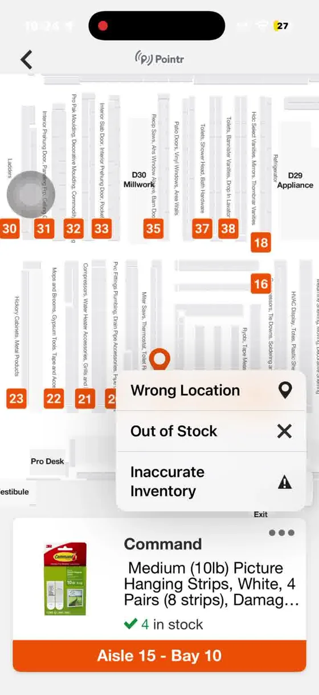
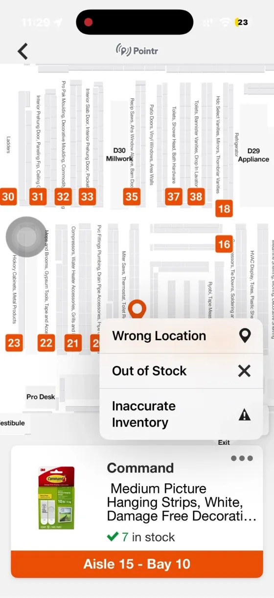
Define
Two problems, two questions to answer
Problem 1
First-time DIYers have to ask again, because the questions are buried in text and Store Mode narrows results without asking.
How might we
let the AI ask the 1 or 2 questions that matter, as quick taps, before it picks products?
Problem 2
Shoppers can report an empty shelf, but the app ends at "Thanks for letting us know."
My check
Check each idea against the real screens
I wireframed the whole journey in grayscale first. It changed too much of the app, so I kept the ideas and moved them onto the real screens, checking each change against a usability principle.
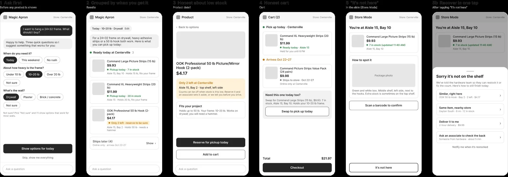
Before and after
Six small changes on the real screens
Ask the most important question first
Before showing any product, Magic Apron asks how you want to hang it. In my interview, this one question would have caught "adhesive."
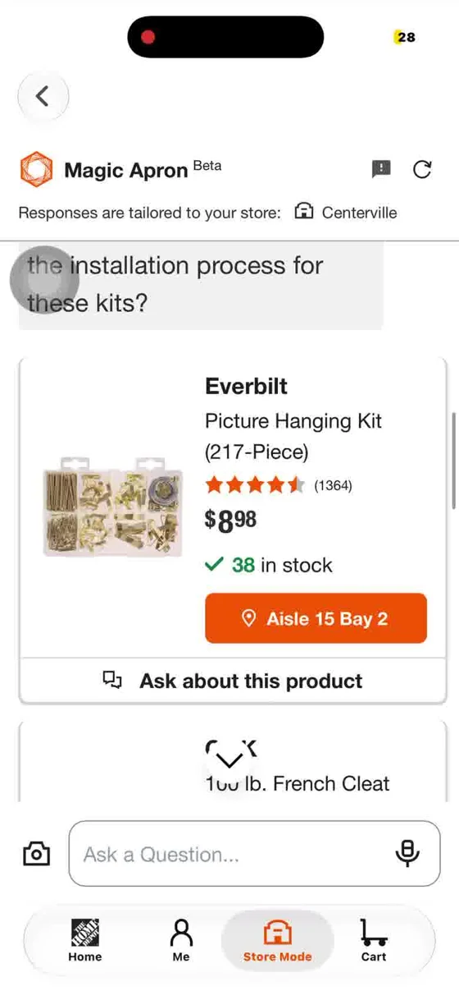
Questions as taps
Questions move out of the paragraph into their own card, 1 of 2 then 2 of 2, with a quiet "Skip questions" at the bottom.
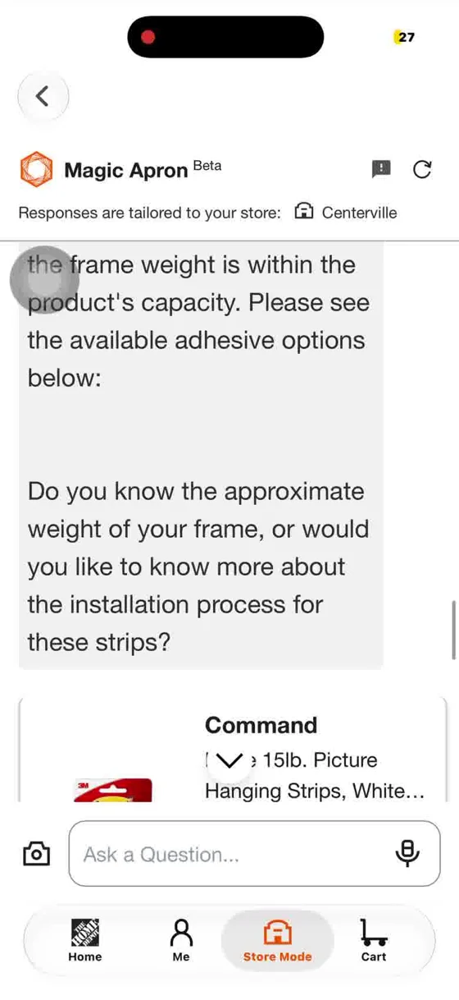
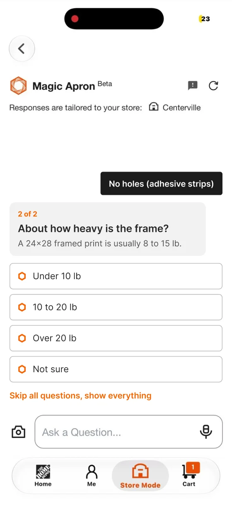
The right items, with the aisle
Results repeat the shopper's own answers, no holes and 10 to 20 lb, with the aisle and bay.
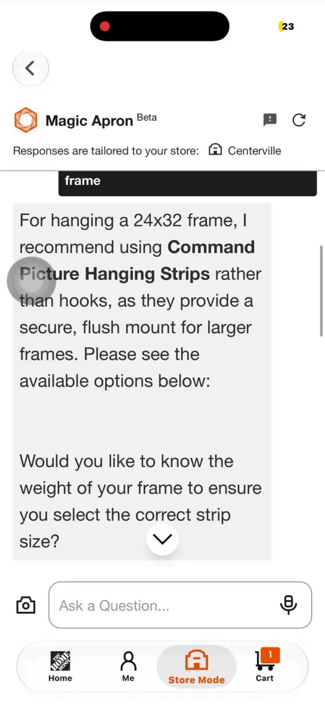
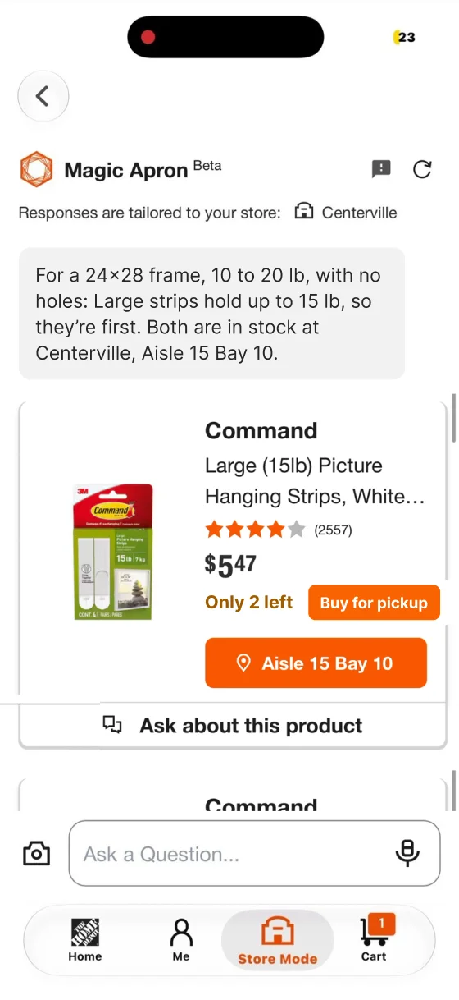
Low stock? Offer pickup today
When fewer than 5 are left, "Buy for pickup" opens a simple sheet with the photo, price and pickup place, and a "Not now" button.
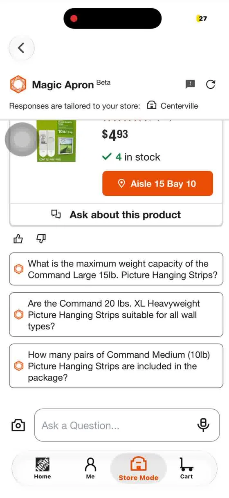
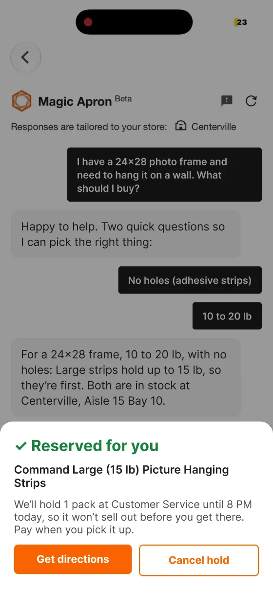
A visible "Can't find it?" button
A labeled button on the product card replaces the small three-dot menu.
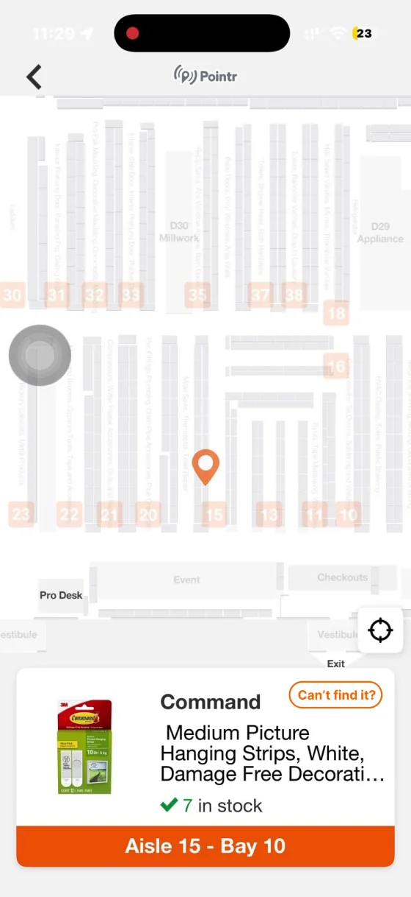
Report, then finish the task
After the thank-you, "Still need it today?" offers a similar item, a nearby store or delivery, with Undo.

How I'd measure it
How I'd measure it
These are hypotheses, not results. I'd watch:
- How often people ask again in the same chat
- How often people answer the questions or skip them
- Pickup orders on low-stock items
- "Can't find it" reports that still end in a purchase